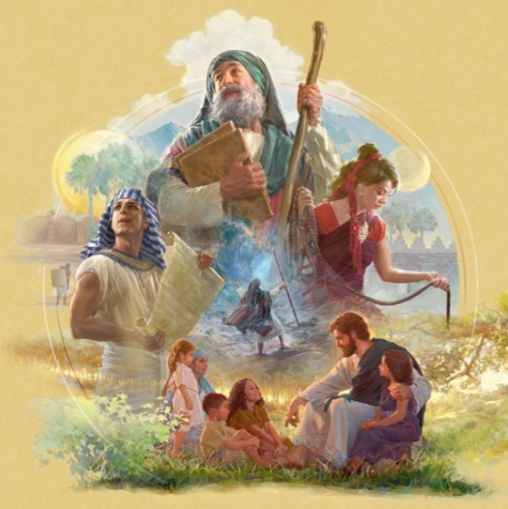

Daut well noch nich schaffen:
Daut well noch nich schaffen:Ekj vesto bloos nich
Waut emma du west opp Plautdietsch: West waut ordentliches seenen dan hia nop und dua sajcht daut waut interesantet:
Furz no mine Adrass
Menschen feelen sikj emma dolla äwafoddat. Oba eena kaun veschiednet doonen, waut doajäajen halpt. Dee sajen:
Jieda eena haft mol Sorjen, oba ekj sie aul gaunz äwafoddat. Daut es nich bloos wäajen eenatlei, waut daut schwoa moakt, oba välet. Met mienen Maun siene Krankheit well daut kjeenmol een Enj nämen – dän mott ekj gaunz besorjen(Fex).
“Miene Fru veleet mie un ekj must auleen twee Kjinja opptrakjen. Daut wia sea schwoa. Un äwa aul däm wort ekj noch miene Oabeit loos un kunn uk nich mea mien Foatich repäaren. Ekj wist mie nich mea Rot un wia gaunz äwafoddat. Ekj wist, daut eena sikj nich sull daut Läwen nämen, oba ekj prachad Gott, daut hee met mie sull een Enj moaken” (Barry).
Oda kikj mul daut:
Daut well noch nich schaffen:
Ekj vesto bloos nich
Wan daut nich to seenen es dan:
Waut es hia de unjascheed
Eingabefeld
Spricha 23:12
Jeff dien Hoat han toom lieren, un diene Uaren toom Weisheit hieren.
Dreck bie däm Bild opp dee Jeschicht waut die interesiert

Noch 1 Error anstehend
Daut wia daut ieerschte waut ekj deed